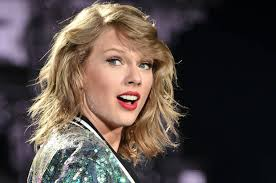

I really really love taylor and I think she is an awesome singer and a very talented writer.
Taylor Alison Swift (born December 13, 1989) is an American singer-songwriter. Raised in Wyomissing, Pennsylvania, she moved to Nashville, Tennessee, at the age of 14 to pursue a career in country music. She signed with the independent label Big Machine Records and became the youngest artist ever signed by the Sony/ATV Music publishing house.
Swift is known for narrative songs about her personal life, which has received much media attention. As a songwriter, she has been awarded by the Nashville Songwriters Association and the Songwriters Hall of Fame. Swift's other achievements include ten Grammy Awards, five Guinness World Records, one Emmy Award, 23 Billboard Music Awards, 11 Country Music Association Awards, eight Academy of Country Music Awards, and one Brit Award. She is one of the best-selling artists of all time, having sold more than 40 million albums—including 27.1 million in the U.S. and 130 million single downloads. She has appeared in Time's 100 most influential people in the world (2010 and 2015), Forbes' top-earning women in music (2011-15), Forbes' 100 most powerful women (2015) and Forbes Celebrity 100 (2016). She was the youngest woman to be included in the third of these and ranked first in the latter. In addition to her music career, Swift has appeared in the television series CSI: Crime Scene Investigation in 2009, the late-night show Saturday Night Live in 2009 and the film Valentine's Day (2010).
Source: Wikipedia
Check how much the world loves our Taylor here
|
|  |